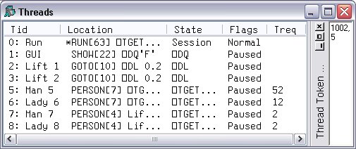
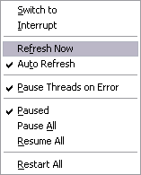

The Threads Tool is used to monitor and debug multi-threaded applications. To display the Threads Tool, select Show Threads Tool from the Session Threads menu, or Threads from the Session pop-up menu.

The above picture illustrates a situation using the LIFT.DWS workspace after executing the function RUN. The Pause on Error option was enabled and a Stop was set on RUN[63]. When RUN suspended at this point, all other threads (1-8) were automatically Paused. Note that all other threads happen to be Paused in the middle of calls to system functions
The columns of the Threads Tool display the following information.
| Column | Description |
|---|---|
| Tid | The Thread ID (⎕TID) and name (⎕TNAME) if set |
| Location | The currently executing line of function code |
| State | Indicates what the thread is doing. (see below) |
| Flags | Normal or Paused. |
| Treq | The Thread Requirements (⎕TREQ) |
| State | Description |
|---|---|
| Pending | Not yet running |
| Initializing | Not yet running |
| Defined function | Between lines of a defined function |
| Dynamic function | Between lines of a dynamic function |
| Suspended | Indicates that the thread is suspended and is able to accept input from the Session window. |
| Session | Indicates that Session window is connected to this thread. |
| (no stack) | Indicates that the thread has no SI stack and the Session is connected to another thread. This state can only occur for Thread 0. |
| Exiting | About to be terminated |
| :Hold | Waiting for a :Hold token |
| :EndHold | Waiting for a :Hold token |
| ⎕DL | Executing ⎕DL |
| ⎕DQ | Executing ⎕DQ |
| ⎕NA | Waiting for a DLL (⎕NA) call to return. |
| ⎕TGET | Executing ⎕TGET, waiting for a token |
| ⎕TGET (Ready to continue) | Executing ⎕TGET, having got a token |
| ⎕TSYNC | Waiting for another thread to terminate |
| Awaiting request | Indicates a thread that is associated with a .NET system thread, but is currently unused |
| Called .Net | Waiting for a call to .NET to return. |
In addition to the thread state as described above, a thread may be Paused or Normal as shown in the Flags column. A Paused thread is one that has temporarily been removed from the list of threads that are being scheduled by the thread scheduler. A Paused thread is effectively frozen.

| Switch to | Selecting this item causes APL to attempt to suspend (if necessary) and switch to the selected thread, connecting it to the Session and Debugger windows. |
| Refresh Now | Refreshes the Threads Tool display to show the current position and state of each thread. |
| Auto Refresh | Selecting this item causes the Threads Tool to be updated continuously, so that it shows the latest position and state of each thread. |
| Pause Threads on Error | If this item is checked, APL automatically Pauses all other threads when a thread suspends due to an error or an interrupt. |
| Paused | This item toggles a thread between being Paused and Normal. It Pauses a Normal thread and resumes a Paused thread. |
| Pause All | This item causes all threads to be Paused. |
| Resume All | This item resumes all threads. |
| Restart All | This item resumes all Paused threads, restarts all suspended threads, and closes the Debugger. |